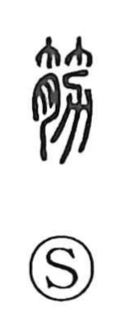

筋

Uncategorized
Kun: suji | On: kin
sinew ・ muscle ・ tendon ・ fiber
Explanation
This character is a pictograph of the place where tendon, muscle, and bone join. The bamboo-like top suggests the taut, fibrous look of a tendon; below it, 月 represents flesh, and 力 outlines a well-developed biceps. Taken together, they portray the living relationship of tendon and muscle that produces strength, hence its use in Japanese for suji—the sinews and muscle-fibers.